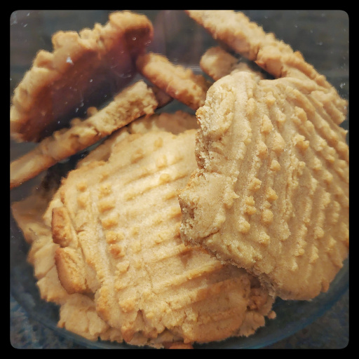

Peanut Butter Cookies
Great cookies but you can't take these to school.

peanut butter
butter
brown and white sugar
egg
flour
baking soda
baking powder
salt
Preheat oven to 375°F.
Warm 3/4 cup of peanut butter and 1/4 cup of butter in the microwave for a few seconds, to make it easier to cream together.
Cream together with 1/2 cup of brown and 1/2 cup of white sugars.
Beat in one egg.
Add 1 & 1/4 cup flour, 1/2 teaspoon each of baking soda and powder, and a pinch of salt.
Mix thoroughly.
Roll dough into 1" balls and squish with a fork to make a crisscross pattern.
Bake for about ten minutes, then cool on the pan for five minutes before transferring to a cooling rack.